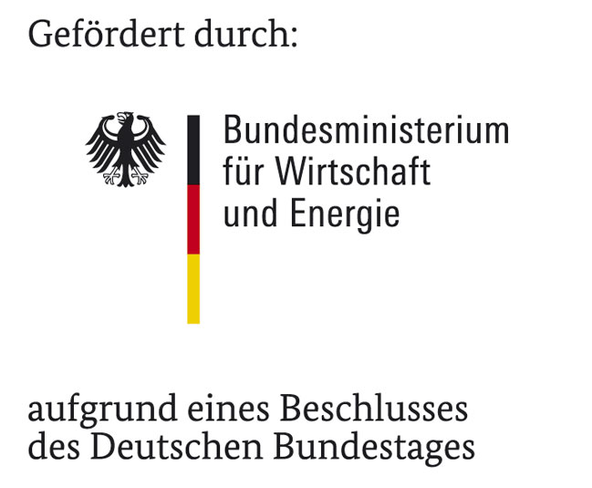

richardsonpy¶
Python version of Richardson tool. richardsonpy includes codes to generate stochastic domestic user, appliance, and lighting profiles.
Indices and tables¶
Original version published under GNU GENERAL PUBLIC LICENSE by Ian Richardson, Murray Thomson and David Infield CREST (Centre for Renewable Energy Systems Technology), Department of Electronic and Electrical Engineering, Loughborough University, Leicestershire LE11 3TU, UK and Department of Electronic & Electrical Engineering, University of Strathclyde, UK Tel. +44 1509 635326. Email address: I.W.Richardson@lboro.ac.uk
see:
https://dspace.lboro.ac.uk/dspace-jspui/handle/2134/3112
and
https://dspace.lboro.ac.uk/dspace-jspui/handle/2134/5786
Python version provided by: Institute for Energy Efficient Buildings and Indoor Climate, E.ON Energy Research Center, RWTH Aachen University
Installation¶
Installation is possible via pip:
'pip install richardsonpy'
(for static installation into your current Python distribution)
or
clone development version via git and install via pip (egglink):
'pip install -e <your_path_to_richardsonpy>'
Dependencies¶
- richardsonpy requires the following Python packages:
- numpy
- matplotlib
- xlrd
Example usage¶
Example code on how to generate a stochastic user profile (profile of active occupancy; 600 seconds resolution)
import numpy as np
import richardsonpy.classes.occupancy as occ
# Total number of occupants within apartment
number_occupants = 3
# Generate occupancy object instance
occupancy_object = occ.Occupancy(number_occupants=number_occupants)
# Pointer to occupancy profile
occupancy_profile = occupancy_object.occupancy
Example code on how to generate stochastic electric load profile (60 seconds resolution)
import numpy as np
import richardsonpy.classes.occupancy as occ
import richardsonpy.functions.load_radiation as loadrad
import richardsonpy.classes.electric_load as eload
def example_stoch_el_load(do_plot=False):
# Total number of occupants in apartment
nb_occ = 3
timestep = 60 # in seconds
# Generate occupancy object (necessary as input for electric load gen.)
occ_obj = occ.Occupancy(number_occupants=nb_occ)
# Get radiation (necessary for lighting usage calculation)
(q_direct, q_diffuse) = loadrad.get_rad_from_try_path()
# Convert 3600 s timestep to given timestep
q_direct = cr.change_resolution(q_direct, old_res=3600, new_res=timestep)
q_diffuse = cr.change_resolution(q_diffuse, old_res=3600, new_res=timestep)
# Generate stochastic electric load object instance
el_load_obj = eload.ElectricLoad(occ_profile=occ_obj.occupancy,
total_nb_occ=nb_occ,
q_direct=q_direct,
q_diffuse=q_diffuse,
timestep=timestep)
# Calculate el. energy in kWh by accessing loadcurve attribute
energy_el_kwh = sum(el_load_obj.loadcurve) * timestep / (3600 * 1000)
print('Electric energy demand in kWh: ')
print(energy_el_kwh)
References¶
[1] I. Richardson, M. Thomson, D. Infield, A high-resolution domestic building occupancy model for energy demand simulations, Energy and Buildings 40 (8) (2008) 1560 1566.
[2] I. Richardson, M. Thomson, D. Infield, A. Delahunty, Domestic lighting: A high-resolution energy demand model, Energy and Buildings 41 (7) (2009) 781 789.
[3] I. Richardson, M. Thomson, D. Infield, C. Clifford, Domestic electricity use: A high-resolution energy demand model, Energy and Buildings 42 (10) (2010) 1878 1887.
License¶
richardsonpy is released by RWTH Aachen University's Institute for Energy Efficient Buildings and Indoor Climate (EBC) under the GNU GENERAL PUBLIC LICENSE
Acknowledgements¶
Grateful acknowledgement is made for financial support by Federal Ministry for Economic Affairs and Energy (BMWi), promotional references 03ET1138D.
{kind=link}
Moreover, we would like to thank Ian Richardson, Murray Thomson and David Infield for providing the basic tool version as open-source tool.